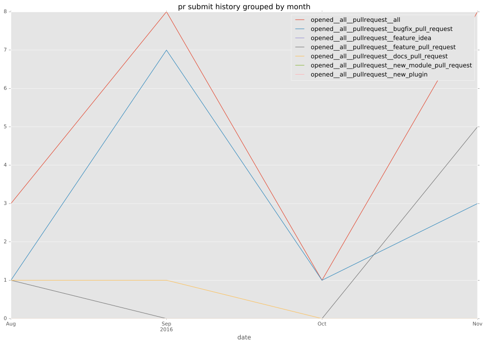
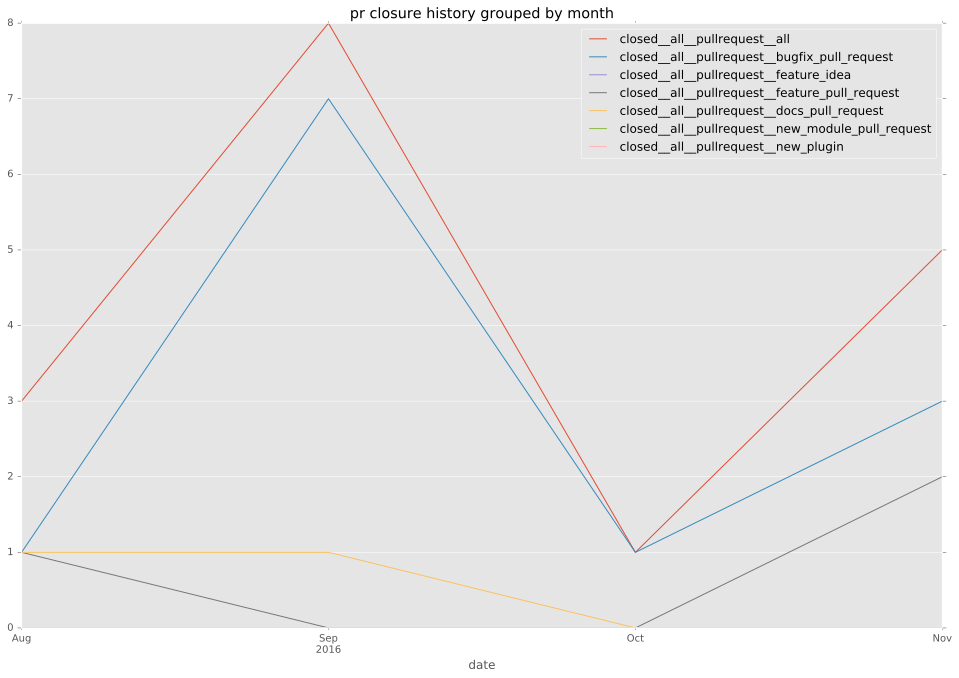

- authors
- jctanner
- maintainers
- contributors
- ypid : 2
- Cougar : 5
- bbooysen : 1
- bhundven : 1
- jctanner : 153
total issue counts
unknown: 1
pullrequest: 14
docs pull request: 2
bugfix pull request: 10
feature idea: 7
issue: 15
new plugin: 1
bug report: 8
issue history

pullrequest history


days open by issue type
all
count: 32
std: 49.9036167802
min: 0
max: 282
median: 0.0
mean: 10.875
pullrequest
count: 0
std: nan
min: nan
max: nan
median: nan
mean: nan
docs pull request
count: 4
std: 0.57735026919
min: 0
max: 1
median: 0.5
mean: 0.5
bugfix pull request
count: 18
std: 3.23380833382
min: 0
max: 10
median: 0.0
mean: 1.11111111111
feature idea
count: 2
std: 197.282791951
min: 3
max: 282
median: 142.5
mean: 142.5
issue
count: 0
std: nan
min: nan
max: nan
median: nan
mean: nan
new plugin
count: 2
std: 0.0
min: 0
max: 0
median: 0.0
mean: 0.0
bug report
count: 5
std: 15.1228304229
min: 0
max: 35
median: 1.0
mean: 8.2
closures grouped by total days open